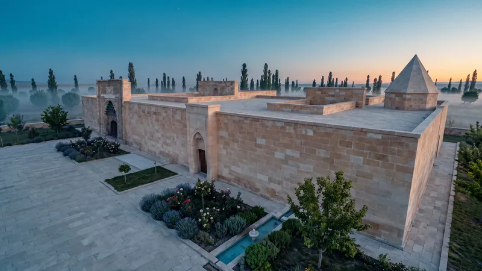

Research
Sources first: the building, the city and the medicine of 1206.
The complex dates to 1205–06: a hospital and a medical school side by side, built by Sultan Gıyaseddin Keyhüsrev I after the will of his sister Gevher Nesibe.
Read more
The hospital stands on the west, the Gıyasiye medical school on the east; both have an open courtyard with four iwans and a pool. The hospital had vaulted patient rooms, and no dome and no glazed tiles.
For the medicine of the time we followed the sources: diagnosis by pulse and by the glass flask, diet, cupping and remedies like theriac, taught at the bedside and then discussed in the great iwan. Anything the sources could not confirm stayed out of the film.
